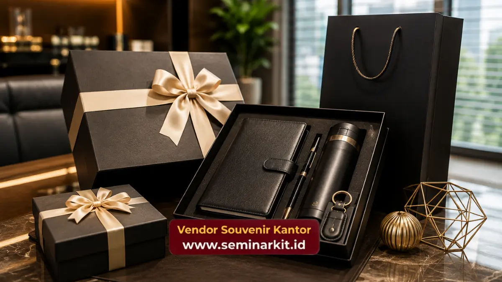

Vendor souvenir kantor adalah penyedia jasa produksi dan pengadaan merchandise korporat, mulai dari alat tulis, tumbler, hingga hampers eksklusif dengan custom logo perusahaan.
Layanan ini membantu perusahaan menghadirkan hadiah profesional untuk klien, mitra bisnis, maupun karyawan.
Anda bisa memesan langsung di vendorsouvenirkantor.web.id untuk kebutuhan volume besar dengan kualitas terjamin.
- Vendor souvenir kantor menyediakan produksi custom logo dari desain hingga pengiriman.
- Pilihan produk mencakup alat tulis premium, drinkware, tas kerja, hingga hampers korporat.
- Harga umumnya menurun signifikan seiring bertambahnya jumlah pesanan (skala grosir).
- Proses pemesanan mencakup konsultasi kebutuhan, desain, produksi, quality control, dan pengiriman.
- Souvenir kantor berperan sebagai representasi citra perusahaan di mata klien dan karyawan.
Apa Itu Vendor Souvenir Kantor dan Kenapa Perusahaan Membutuhkannya
Vendor souvenir kantor adalah mitra produksi yang mengubah kebutuhan branding perusahaan menjadi produk fisik siap pakai, lengkap dengan logo, warna korporat, dan pesan singkat perusahaan.
Kebutuhan ini muncul dari beberapa momen bisnis yang berulang setiap tahun: penyambutan klien baru, penutupan kontrak kerja sama, seminar dan pelatihan internal, hingga apresiasi akhir tahun untuk karyawan.
Di setiap momen tersebut, souvenir kantor berfungsi sebagai duta kecil dari identitas perusahaan yang dibawa pulang oleh penerimanya.
Apa Perbedaan Souvenir Kantor dengan Merchandise Biasa
Souvenir kantor dirancang khusus untuk konteks profesional, sehingga desain, warna, dan jenis materialnya cenderung lebih formal dan elegan dibanding merchandise promosi umum yang sering dibagikan gratis di pameran.
Souvenir kantor biasanya melalui proses kurasi lebih ketat karena akan mewakili citra perusahaan di hadapan klien, mitra, atau pemangku kepentingan penting.
Perbedaan utamanya terletak pada tiga hal: kualitas material yang lebih tinggi, kemasan yang lebih premium, dan personalisasi yang lebih detail seperti nama penerima atau nomor seri terbatas.
Faktor-faktor ini membuat souvenir kantor terasa lebih bernilai dan layak disimpan jangka panjang dibanding merchandise sekali pakai.
Jenis Souvenir Kantor yang Paling Banyak Dipesan Perusahaan
Setiap kategori souvenir kantor memiliki fungsi dan momen penggunaan yang berbeda, sehingga pemilihannya perlu disesuaikan dengan tujuan acara dan target penerima.
Pemahaman ini penting sebelum menentukan jenis produk yang akan dipesan dari vendor souvenir kantor pilihan Anda.
Alat tulis premium seperti pulpen metal dan notebook kulit sintetis tetap menjadi kategori terlaris karena fungsinya yang praktis dan cocok untuk hampir semua momen bisnis.
Drinkware seperti tumbler stainless dan mug custom logo juga populer karena dipakai berulang kali sehingga eksposur brand perusahaan bertahan lebih lama.
Selain itu, tas kerja, power bank custom, dan hampers berisi kombinasi produk kini semakin diminati untuk acara-acara bernilai tinggi seperti gathering direksi atau penutupan kerja sama strategis.
Bagaimana Memilih Jenis Souvenir Sesuai Momen Perusahaan
Jenis souvenir sebaiknya disesuaikan dengan konteks acara: souvenir untuk klien idealnya lebih eksklusif dan personal, sementara souvenir untuk karyawan bisa lebih fungsional dan sering dipakai sehari-hari.
Acara formal seperti seminar korporat umumnya menggunakan seminar kit lengkap, sedangkan acara apresiasi tahunan lebih cocok dengan hampers bertema.
Pertimbangan lain yang perlu diperhatikan adalah durasi penggunaan produk, di mana barang dengan usia pakai panjang seperti tumbler atau tas kerja memberikan nilai eksposur brand yang jauh lebih besar dibanding barang yang habis pakai dalam sekali acara.

Kelebihan Souvenir Kantor Custom Logo untuk Branding Perusahaan
Souvenir kantor custom logo memberikan eksposur brand yang berkelanjutan karena produk tersebut terus digunakan oleh penerimanya jauh setelah acara selesai.
Setiap kali digunakan, logo dan identitas visual perusahaan kembali terlihat oleh penerima maupun orang di sekitarnya, menciptakan efek pengingat brand secara alami dan berulang.
Selain fungsi branding, souvenir kantor custom logo juga memperkuat kesan profesional perusahaan di mata klien dan mitra bisnis.
Pemberian souvenir yang dirancang khusus menunjukkan bahwa perusahaan memperhatikan detail dan menghargai relasi bisnis yang dijalin, sebuah sinyal kepercayaan yang sulit digantikan hanya dengan komunikasi verbal atau tertulis.
Apakah Souvenir Kantor Efektif Meningkatkan Loyalitas Karyawan
Souvenir kantor yang diberikan secara konsisten pada momen-momen penting dapat memperkuat rasa dihargai dan keterikatan emosional karyawan terhadap perusahaan.
Praktik ini umum diterapkan sebagai bagian dari program apresiasi non-finansial yang melengkapi kompensasi utama.
Karena penerimaan hadiah fisik cenderung memberikan kesan personal yang lebih membekas dibanding insentif yang bersifat administratif.
Faktor yang Mempengaruhi Biaya Souvenir Kantor dari Vendor
Biaya souvenir kantor umumnya dipengaruhi oleh empat faktor utama: jenis material produk, kompleksitas metode customisasi logo, jumlah pesanan, dan kebutuhan kemasan tambahan.
Memahami faktor-faktor ini membantu perusahaan menyusun anggaran secara lebih akurat sebelum berkonsultasi dengan vendor souvenir kantor.
Metode customisasi seperti bordir, ukir laser, atau cetak UV memiliki struktur biaya yang berbeda tergantung tingkat kerumitan desain dan jenis material yang digunakan.
Umumnya, semakin besar jumlah pesanan, semakin rendah biaya produksi per unit karena efisiensi skala produksi.
Sehingga banyak perusahaan memilih memesan dalam volume besar untuk kebutuhan tahunan sekaligus guna menekan anggaran.
Berapa Kisaran Anggaran Ideal untuk Souvenir Kantor Perusahaan
Anggaran ideal untuk souvenir kantor sangat bervariasi tergantung jenis produk dan target penerima, dengan kisaran mulai dari produk fungsional sederhana hingga hampers premium bernilai tinggi untuk klien VIP.
Sebagai gambaran umum, perusahaan biasanya mengalokasikan anggaran lebih besar untuk souvenir klien dibanding souvenir internal karyawan, karena souvenir klien berfungsi langsung sebagai representasi nilai kerja sama bisnis.
Kesalahan Umum yang Perlu Dihindari Saat Memesan Souvenir Kantor
Kesalahan paling sering terjadi adalah memesan souvenir terlalu mendekati tanggal acara, sehingga waktu produksi dan quality control menjadi terlalu singkat dan berisiko menurunkan kualitas hasil akhir.
Idealnya, pemesanan souvenir kantor dalam jumlah besar dilakukan beberapa minggu sebelum acara agar seluruh tahapan produksi berjalan dengan baik.
Kesalahan lain adalah tidak melakukan pengecekan sampel produk sebelum produksi massal, yang berisiko menimbulkan ketidaksesuaian warna logo, ukuran, atau kualitas material dengan ekspektasi perusahaan.
Selain itu, banyak perusahaan kurang memperhitungkan kebutuhan kemasan dan pengiriman ke berbagai cabang, padahal aspek ini turut menentukan kesan profesional saat souvenir diterima.
Souvenir kantor custom logo bukan sekadar pelengkap acara, melainkan investasi branding yang memberikan eksposur berkelanjutan bagi perusahaan.
Pemilihan jenis produk, pemahaman struktur biaya, serta perencanaan waktu pemesanan yang matang menjadi kunci agar hasil akhir sesuai kebutuhan dan citra korporat yang diinginkan.
Jika perusahaan Anda sedang mempersiapkan acara korporat, apresiasi karyawan, atau hadiah untuk klien, konsultasikan kebutuhan souvenir kantor Anda langsung bersama vendorsouvenirkantor.web.id. Tim kami siap membantu dari tahap desain hingga pengiriman ke seluruh cabang perusahaan Anda.

Banner promosi: klik gambar untuk langsung terhubung ke WhatsApp tim sales.